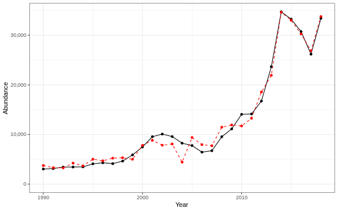

3.1 Abundance
3.1.1 Generalized linear model
This is an exploratory fit of a poisson GLM. Initial covariates were included based on statistical significance at a Bonferroni-corrected alpha in the linear correlations shown in this report. Final covariates were chosen by forward stepwise AIC selection of additive GLMs, with the maximum number of steps limited to the number of data points divided by two.
| rnames | Estimate | Std. Error | z value | Pr(>|z|) |
|---|---|---|---|---|
| (Intercept) | 96.6 | 16.8 | 5.75 | 8.91e-09 |
| spirspp 100m3 annual | 0.875 | 0.0345 | 25.3 | 1.24e-141 |
| penilia 100m3 spring | 0.37 | 0.049 | 7.55 | 4.23e-14 |
| spirspp 100m3 fall | -1.53 | 0.0281 | -54.3 | 0 |
| echino 100m3 annual | 0.179 | 0.00762 | 23.5 | 6.48e-122 |
| poly 100m3 fall | 0.402 | 0.00883 | 45.5 | 0 |
| spirspp 100m3 spring | -0.543 | 0.0165 | -32.9 | 6.68e-237 |
| long term sst degreesC |
0.054 | 0.0125 | 4.31 | 1.65e-05 |
| Longitude degreesW | 2.33 | 0.616 | 3.79 | 0.000151 |
| along shelf distance km |
-0.0316 | 0.0107 | -2.96 | 0.00312 |
| fall OI SST Anomaly Black sea bass north spring degreesC |
-0.00969 | 0.00457 | -2.12 | 0.0341 |
| summer OI SST Anomaly Black sea bass spring degreesC |
-3.45 | 0.076 | -45.4 | 0 |
| summer OI SST Anomaly Black sea bass north spring degreesC |
1.31 | 0.0299 | 43.9 | 0 |
| summer OI SST Anomaly degreesC |
2.2 | 0.0509 | 43.2 | 0 |
| Latitude degreesN | 2.53 | 0.897 | 2.82 | 0.0048 |
Dropped coefficients:
, salps_100m3_annual

Figure 3.1: Predicted (dashed red) and actual (solid black) response variable over time